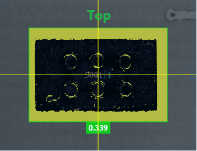
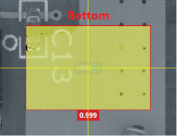

制作SideMark检测库
SideMark检测库用于实现双面测试，系统通过SideMark来判定是否需要运行检测程序，从而实现电路板正反面的自动切换。
操作步骤如下：
- 通过主菜单 [ 切换面 ] ，选择Top面编辑。
- 采集电路板Top面整板图 。
- 点击菜单项 [ 元件 ] → [ 添加组 ] → [ SideMark ] 。
- 双击进入SideMark组。
- 选择一处可以明显区分电路板Top、Bottom位置添加元件，例如：空焊盘，电路板标识信息。
制作Top面SideMark检测库，任何可以稳定区分Top面与Bottom面的算法都可以用作SideMark库制作，以亮度抽取为例：
- 点击菜单项 [ 检测库 ] → [ 新建库 ] ，此时自动切换到 [ 检测窗口 ] 面板，选择 [ 单窗口 ] ，此时在右侧检测窗口列表中可以看到一个新的检测窗口，点击 [ 检测算法 ] 下拉菜单， 选择“亮度抽取”。
- 设置检测窗口的
宽度、高度，确保检测窗口内包含区分正反面的标识信息。 - 选择合适的IPE, 设置算法参数：
阈值，使标识信息与电路板明显区分。 上限下限, 确保检测Top面图像不报警，检测Bottom面图像报警。
采集Bottom面图像验证效果。
示例
 